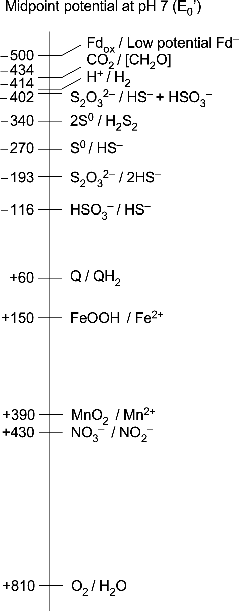
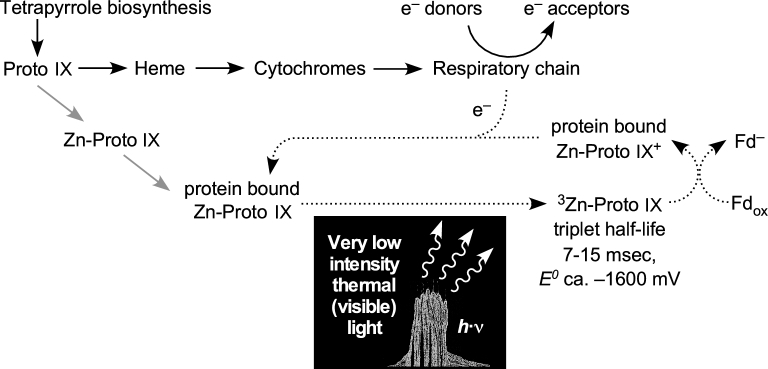
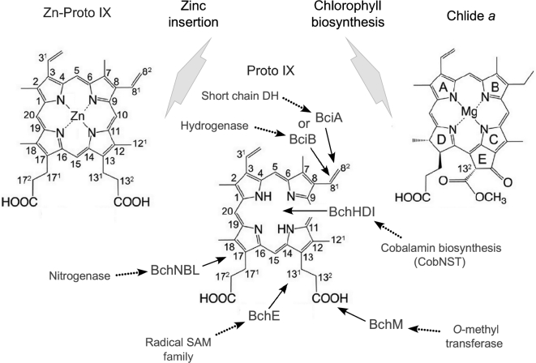
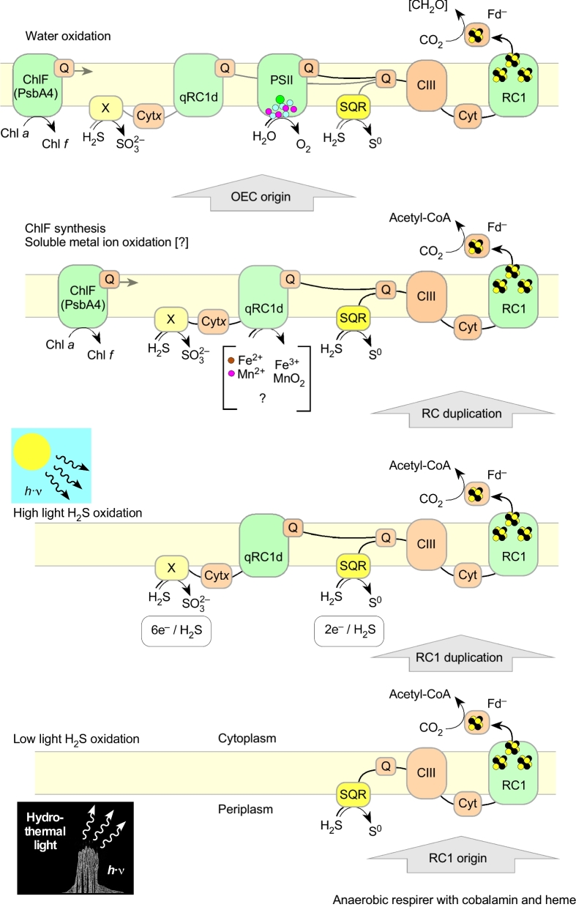
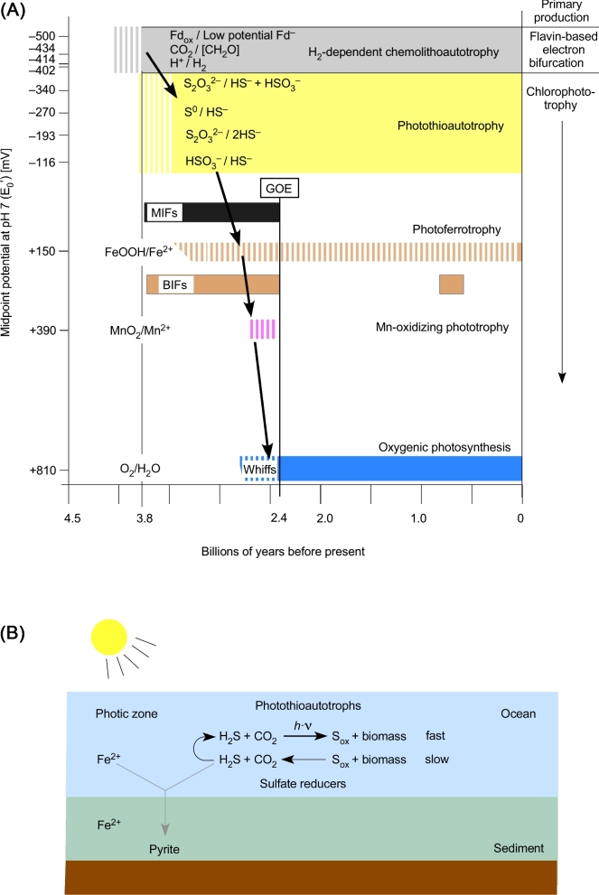
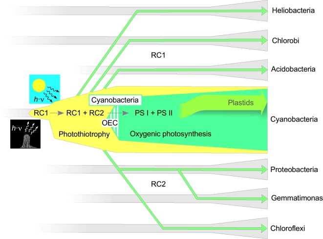

§030 秒速覽
五個數字抓骨架：生產躍升、電位落差、毫秒三重態、深海微光、唯一的合成途徑
§1先備知識：電位梯子、Fd、兩種反應中心
讀這篇只需要三個概念；其餘名詞放在本節最後的小抄
光合作用其實是兩件事。論文先把「光合作用」拆成葉綠素光營養（chlorophototrophy：用葉綠素和光產生 ATP 或還原力）和固定 CO₂。兩件事不一定綁在一起：表 1 就有三個門的細菌會用光，卻不會固碳。
電位梯子。每一對「電子供體／受體」都有一個中點電位（E₀′，pH 7 時的值）。可以把它想成高度：電位越負，電子在那個分子上就越「高」、越想往下走。電子會自發從負往正流，像水往低處流；反過來把電子送到更負的位置，就是上坡，一定要有東西付能量。原圖 1 就是這把梯子。

Fd：固碳要的「低電位電子」。鐵氧還蛋白（ferredoxin，Fd）是一種帶鐵硫簇的小蛋白。厭氧固碳途徑的酵素要它提供約 −500 mV 的電子，比 H₂（−414 mV）還負 86 mV。還原態的 Fd 寫成 Fd⁻（或 Fdred）。全篇論文就從這 86 mV 的落差講起。
兩種反應中心（reaction center，RC）。反應中心是葉綠素和蛋白質組成的複合體，吸光後把一個電子從供體推給受體。兩型的結構相似，但胺基酸序列已經比不出同源關係：
| 第一型（RC1） | 第二型（RC2） | |
|---|---|---|
| 電子的終點 | 鐵硫簇，可以直接還原 Fd | 醌（quinone） |
| 不產氧細菌裡的主要用途 | 多半是線性電子流：H₂S 或有機物 → Fd（綠硫菌拿去固碳；日光桿菌、酸桿菌不固碳） | 循環電子流：建立離子梯度做 ATP；或靠逆向電子傳遞做 NAD(P)H |
| 誰在用 | 綠硫菌、日光桿菌、酸桿菌（同二聚體）；藍綠菌的光系統 I（PSI，異二聚體） | 紫細菌、綠彎菌、芽單胞菌；藍綠菌的光系統 II（PSII；兩者都是異二聚體） |
RC2 菌也能做出還原態 Fd：例如紫細菌固氮時，靠 Rnf 複合體做逆向電子傳遞；但電子來自有機酸、還要消耗 ATP，不增加淨初級生產。
藍綠菌（還有植物的葉綠體）兩型都有，而且串聯使用：PSII 拆水，PSI 還原 Fd，這就是產氧光合作用。其他光合細菌都只有一型，不放氧，稱為不產氧光合作用。
名詞小抄（點開）
- 蛇紋岩化（serpentinization）
- 海水滲進富含 Fe²⁺ 的超基性岩，Fe²⁺ 被氧化成含 Fe³⁺ 的礦物（例如同時含二價與三價鐵的磁鐵礦），同時把水還原成 H₂。這是超基性岩熱液噴口 H₂ 的主要來源。
- 黃素電子分岔（flavin-based electron bifurcation）
- FAD 接下一對電子後把它們拆開：一個往上坡送去還原 Fd，另一個往下坡送給較正的受體，用下坡賺到的能量付上坡的帳。
- 四吡咯、紫質（porphyrin）
- 四個吡咯環圍成的大環分子家族：血基質是紫質（中心是 Fe），葉綠素是二氫紫質（chlorin，中心是 Mg），鈷胺素（即維生素 B₁₂）是咕啉環（中心是 Co）。原紫質 IX（protoporphyrin IX，PPIX）是葉綠素和「經典途徑」血基質共同的前驅物；有些細菌與古菌（包括硫酸鹽還原菌）合成血基質不經過 PPIX。
- 單重態、三重態
- 分子吸光後先進入單重激發態，只活幾奈秒，葉綠素做光化學用的就是它；其中一部分會經「系間跨越」轉成三重態，三重態可以活到毫秒級。
- 固碳途徑
- 乙醯輔酶 A 途徑（Wood–Ljungdahl）、逆向三羧酸循環（rTCA）、二羧酸／4-羥丁酸循環，這三條都有關鍵的還原步驟要靠 Fd（逆向 TCA 也用 NAD(P)H）；3-羥丙酸雙循環和卡爾文循環（CBB）只靠 NADPH。已知固碳途徑共六條，另一條是古菌的 3-羥丙酸／4-羥丁酸循環（論文沒有展開）。
- 光合硫營養（photothiotrophy）、光合鐵營養（photoferrotrophy）
- 以硫化物（H₂S）或 Fe²⁺ 當電子來源的光營養。
- 綠小體（chlorosome）
- 細菌葉綠素自己組裝成的巨大天線，只需要少數幾種蛋白，非常省、非常適合弱光。
- whiffs（氧化劑的「氣息」）
- GOE 以前沉積、卻帶有水中已有氧化劑痕跡的岩層；那個氧化劑是不是 O₂，正是爭論所在（§9）。
- 大氧化事件（GOE）、MIF、BIF
- GOE：約 24 億年前大氣 O₂ 開始累積。MIF：硫同位素的非質量相依分餾，只有在大氣幾乎無氧（低於現今大氣含量的 10⁻⁵）時才保存得下來，是 GOE 以前無氧的指標。BIF：帶狀鐵礦層，GOE 以前大量沉積。
- 放氧複合體（OEC）
- PSII 上的 Mn₄CaO₅ 簇，負責把水拆成 O₂、質子和電子。
- 水平基因轉移（HGT）
- 基因在不同譜系之間橫向移動，不經過親代遺傳。
§2謎題：七個門、四種反應中心、配對一團亂
論文表 1：現存的葉綠素光營養細菌，以及它們各自的生理
到 2017 年為止，會用葉綠素行光營養的細菌分布在七個門。兩型反應中心可以再細分成四種：同二聚體的 RC1（綠硫菌、日光桿菌、酸桿菌）、異二聚體的 RC1（藍綠菌的 PSI），以及兩種都是異二聚體的 RC2（變形菌、綠彎菌、芽單胞菌用的一種；藍綠菌的 PSII 另一種）。這些 RC 搭配的固碳途徑，是六條已知途徑裡的三條。另外有三個門根本不固碳，三個門有綠小體，六個門有能在有氧環境生長的成員。
| RC | 類群 | 光合生長的氧耐受 | 好氧異營 | 固碳途徑 | 綠小體 | 光合自營時的電子供體 |
|---|---|---|---|---|---|---|
| 1 | 厚壁菌門：日光桿菌 Heliobacterium | 厭氧 | 否 | 無 | – | 無（不自營） |
| 1 | 酸桿菌門：Chloracidobacterium | 微好氧 | 是 | 無 | ＋ | 無（不自營） |
| 1 | 綠菌門：Chlorobium（綠硫菌） | 厭氧 | 否 | rTCA | ＋ | H₂S、S⁰、S₂O₃²⁻ |
| 1 | C. ferrooxidans | 厭氧 | 否 | rTCA | ＋ | Fe²⁺ |
| 2 | 綠彎菌門：Chloroflexus | 厭氧 | 是 | 3-羥丙酸雙循環 | ＋ | H₂ 或 H₂S |
| 2 | Oscillochloris | 厭氧 | 不明 | 卡爾文 | ＋ | H₂ 或 H₂S |
| 2 | 變形菌門：紫硫菌 | 厭氧 | 是 | 卡爾文 | – | H₂S、S⁰、S₂O₃²⁻ |
| 2 | 紫色非硫菌 | 厭氧 | 是 | 卡爾文 | – | H₂、H₂S、S₂O₃²⁻ |
| 2 | Rps. palustris TIE1 | 厭氧 | 是 | 卡爾文 | – | Fe²⁺ |
| 2 | 好氧不產氧光合菌 | 好氧 | 是 | 無 | – | 無（不自營） |
| 2 | 芽單胞菌門：Gemmatimonas | 好氧 | 是 | 無 | – | 無（不自營） |
| 1＋2 | 藍綠菌門 | 好氧 | 是 | 卡爾文 | – | H₂S 或 H₂O |
| 1＋2 | Oscillatoria、Microcoleus | 厭氧 | 是 | 卡爾文 | – | H₂S 或 H₂O |
依論文表 1 整理成繁中，省略附註。附註要點：卡爾文循環在不同細菌裡用的酵素差異很大（醛縮酶、磷酸核酮糖激酶、RuBisCO 都有不同類型）；大多數做不產氧光合作用的藍綠菌，會把硫化物定量氧化成硫代硫酸鹽。
從這張表，論文讀出四件事：
- 在演化樹上散得很開。這些類群在任何現代分類方案裡都不是近親。
- 水平轉移有直接證據。海洋的 Roseobacter 類變形菌帶著約 100 kb 的質體（plasmid，可在細胞間移動的環狀 DNA），上面有反應中心、細菌葉綠素、類胡蘿蔔素合成所需的全部基因，而且能在菌株之間移動。海洋噬菌體帶著有功能的 PSI、PSII 基因。最新發現的光合芽單胞菌，光合基因群明顯是從紫細菌拿來的。
- 兩個規律。凡是有成員能固碳的光合門，都有成員能用 H₂S 當電子供體行光合自營；只有藍綠菌能拆水。不少藍綠菌也能改用 H₂S 行不產氧光合作用。
- 作者的立場。既然水平轉移把「生理」和「譜系」拆開了，與其爭論樹上誰先誰後，不如追問每一種生理狀態從哪裡來、對當時的細胞有什麼用。
§3光合作用之前：靠 H₂ 吃飯的世界
固碳要 −500 mV 的 Fd；唯一夠負的天然電子來源，是熱液噴口冒出的 H₂
唯一的電子來源。光合作用出現以前，能大量供應初級生產的電子來源只有一個：地質作用產生的 H₂。從太空掉下來的有機物種類太雜、濃度太低（每種異構物只有十億分之幾），養不起生態系，所以生命的碳只能從 CO₂ 來。
H₂ 從哪來：蛇紋岩化。海水在熱液系統裡循環，碰到地殼中含 Fe²⁺ 的礦物。Fe²⁺ 把電子交給水，自己變成含 Fe³⁺ 的礦物（例如磁鐵礦 Fe₃O₄），水則被還原成 H₂。現代蛇紋岩化系統的噴口流體常含 10–20 mM 的 H₂（玄武岩型的黑煙囪通常少得多）；從 42 億年前地球有液態水開始，這個反應就沒停過。蛇紋岩化還會順便把 CO₂ 還原成甲烷、乙酸這類小分子，跟最原始的厭氧菌（產乙酸菌、產甲烷古菌）的核心代謝非常相似。
最早的細胞。比較基因體學推測，最早的細胞很像產乙酸菌和產甲烷古菌，用乙醯輔酶 A 途徑固碳。這是六條已知固碳途徑裡唯一本身會放能的一條，固碳的同時就能建立質子梯度、做 ATP；其他途徑都得先花 ATP。
難關：86 mV 的上坡。這條途徑的酵素需要約 −500 mV 的還原態 Fd，H₂ 卻只有 −414 mV，電子得往上坡走。細胞的解法是 2008 年才被發現的黃素電子分岔：FAD 接下 H₂ 的一對電子，一個往上坡送去還原 Fd，另一個往下坡送給較正的受體（產乙酸菌是 NAD⁺，−320 mV；產甲烷古菌是異二硫化物 CoM-S-S-CoB，−140 mV），用下坡賺到的能量付上坡的帳。
分岔出現以前怎麼辦？論文推測，在電子分岔演化出來以前，熱液環境中富含 FeS 的礦物，以及天然存在的零價金屬（例如蛇紋岩化系統常見的 awaruite，Ni₃Fe），能代替 Fd 去還原 CO₂。最早的化能自營生物，靠的是岩石、水、金屬與 H₂ 之間的交互作用。
作者自己補的但書。理論上，只要環境裡有電位夠正的受體（例如 O₂），電子分岔也能用 H₂S 這類較正的供體來還原 Fd。但沒有證據顯示早期地球有足量、電位接近 O₂（+810 mV）的受體，撐得起一個生態系。所以作者的說法是「就目前所知」，H₂ 是唯一的路。
H₂ 夠不夠？夠。噴口的 10–20 mM H₂，比沒有細胞色素的產甲烷古菌持續生長所需的 H₂ 分壓（約 10 Pa）高出好幾個數量級。問題不在量，而在生產被綁在 H₂ 冒出來的地方。
異營生物跟著出現。生物量累積之後，就有了吃屍體維生的異營生物。細胞約 50–60% 是蛋白質、20% 是 RNA、10% 是脂質、5–10% 是醣類；在 H₂ 分壓低的環境，發酵這些分子是划算的。光合作用就誕生在這樣的生態系裡：化能自營者負責生產，異營者吃前者的細胞。
插曲：RuBisCO 原本可能不是拿來固碳的
談光合作用起源，大家常想到卡爾文循環的固碳酵素 RuBisCO。但近年的研究顯示，靠 Fd 的厭氧固碳途徑（乙醯輔酶 A 途徑、逆向 TCA）比卡爾文循環古老。卡爾文循環完全靠 NADPH，沒有任何一步用到 Fd。
RuBisCO 很可能起源於異營代謝。古菌 Thermococcus kodakarensis 有一條分解 RNA 的短途徑：核苷單磷酸先被切掉鹼基，變成核糖-1,5-二磷酸；再異構成核酮糖-1,5-二磷酸；最後由 RuBisCO 加上一個 CO₂，切成兩分子 3-磷酸甘油酸，拿去做碳與能量代謝。對靠死細胞（20% 是 RNA）維生的早期異營生物來說，這是很好用的一條路。芽孢桿菌的類 RuBisCO 蛋白，用在甲硫胺酸回收這條異營途徑；產甲烷古菌的類 RuBisCO 蛋白位在 RuBisCO 演化樹的根部，在代謝中提供 RuBP 羧化活性，但這些古菌固碳靠的是乙醯輔酶 A 途徑。
誰發明了光合作用？
生合成途徑的先後次序，可能反映演化的先後（Granick 假說）。葉綠素要從血基質的前驅物做起，血基質又出現在會做鈷胺素的細胞之後。論文的表 2 把這個次序排成五個生理階段：
| 相對年代 | 四吡咯 | 生理 | 現代代表 | 電子來源 |
|---|---|---|---|---|
| 現代 | 葉綠素 | RC1＋RC2 光營養 | 藍綠菌 | H₂S、H₂O |
| 較進階 | 葉綠素 | 只有 RC1 的光營養 | 藍綠菌、綠硫菌 | H₂S |
| 中間 2 | 紫質 | 混合營養 | 沒有現存代表 | H₂S |
| 中間 1 | 血基質 | 無氧呼吸 | 硫還原菌、自營的 ε-變形菌 | 有機物、H₂ |
| 原始 | 鈷胺素 | 化能無機自營 | 產乙酸菌、產甲烷古菌 | H₂ |
所有不產氧光合作用的電子鏈都有細胞色素和醌，所以發明光合作用的細胞，原本就得會某種用細胞色素和醌的呼吸作用。那時還沒有 O₂，終端受體只能是別的東西。候選者之一是亞硫酸鹽：火山噴出的 SO₂ 溶進海裡就是 SO₃²⁻，而硫酸鹽還原中真正產能的那一段，本來就從亞硫酸鹽開始。作者因此說，在古地球上，「硫酸鹽還原」不如叫「亞硫酸鹽還原」。
作者想像中的宿主，是能化能自營、也能化能異營的厭氧呼吸菌，生理上類似用乙醯輔酶 A 途徑的硫酸鹽還原菌，或是用逆向 TCA 固碳、用多硫化物還原酶還原 S⁰ 的 ε-變形菌。他們偏好後者：逆向 TCA 要消耗 ATP，碳代謝和能量代謝是分開的兩套。在這種細胞裡，用光還原 Fd 可以直接加快固碳，卻不會打亂原本的能量代謝。這兩類菌在現代熱液環境都很常見。
§4第一道光：鋅原紫質
鋅不能傳電子，卻能讓一顆紫質把光「存」上好幾毫秒
要利用光，得先有兩樣東西：光源（留到 §6），以及具備葉綠素那種光化學性質的分子。論文提出，第一個做光化學的分子可能不是葉綠素，而是鋅原紫質（Zn-PPIX）。
鋅會自己跑進去。鋅離子可以自發插入原紫質 IX，血基質途徑的亞鐵螯合酶也會順手催化。現代就有實例：紅桿菌 Rhodobacter sphaeroides 的 bchD 突變株缺少 Mg-螯合酶（現代葉綠素合成的第一個專屬步驟），亞鐵螯合酶就把 Zn²⁺ 插進原紫質，一路做出 Zn-細菌葉綠素 a。
鋅不能傳電子，但能存光。鋅只有 +2 一種價態，在生物裡不參與氧化還原，所以 Zn-PPIX 沒辦法像血基質的鐵那樣在細胞色素裡傳電子。（嚴格說，光化學裡被拿走電子的是紫質環本身，不是中心金屬；葉綠素的鎂同樣不參與氧化還原。）但假如 Zn-PPIX 被塞進一個現成的可溶性血基質結合蛋白（例如還沒裝上血基質的細胞色素 b），這個蛋白就多了一個感光頭：
- 吸光（約 410、540、580 nm）後，約 90% 進入三重激發態；
- 三重態的壽命長達 7–15 ms；
- 電位約 −1.6 V（Zn-細胞色素 c 的三重態實測為 −1.7 V），是很強的還原劑，實驗上能還原質體藍素和細胞色素 b₅。本站註：依常用換算（基態氧化電位約 +0.8 V 減三重態能量約 1.7 eV），三重態當還原劑約 −0.9 V，內文「900／800 mV」那句也指向這個量級；不論哪個，都遠比 Fd 的 −500 mV 負。
壽命為什麼重要？葉綠素做光化學用的單重激發態只活幾奈秒，電子受體必須事先就排在旁邊，否則激發態在電子交出去之前就衰減回基態。毫秒級的三重態則有足夠時間靠擴散去「找」受體。厭氧菌細胞質裡的 Fd 又非常多，約 80–400 μM。
被氧化的 Zn-PPIX⁺ 再由細胞既有的呼吸鏈補回電子，形成一個迴路（原圖 2 的虛線）。這套裝置可以取代依賴 H₂ 的電子分岔，也為後來的葉綠素合成鋪了路。

現代還找得到鋅。嗜酸菌 Acidiphilium rubrum 的 RC2 用 Zn-細菌葉綠素 a；Chloracidobacterium thermophilum 的 RC1，「特殊對」看來是 Zn-細菌葉綠素 a′。人工光合作用研究也常拿合成的鋅紫質、或接在細胞色素上的鋅紫質做光驅動的氧化還原反應。
鋅換成鎂，可能是後來的事。論文的說法是：換成 Mg 之後，激發態的化學從三重態轉向單重態。（Mg-葉綠素其實也會形成三重態，只是產率較低；有效的光化學改由只活幾奈秒的單重態在反應中心內完成。）這時必須先有一個排好電子受體鏈的蛋白，讓電荷分離後的狀態撐得比電荷再結合（逆反應）久，否則光能會白白浪費。作者因此認為鋅換鎂可能發生在起源的後期，這也許就是某些 RC 至今仍用 Zn-細菌葉綠素的原因。
§5從血基質到葉綠素：借來的酵素
每一步都能在細胞現有的工具箱裡找到祖先；唯一找不到的，是 RC 蛋白本身
為什麼要繼續改造？Zn-PPIX 對 423 nm 藍光吸收很強，在 550、600 nm 附近只有微弱吸收。熱液噴口的光偏紅、缺藍光，把吸收往紅光和近紅外推，能多吸收很多光子。
論文逐一追查，從 Zn-PPIX 走到葉綠酸酯 a 需要哪些酵素，以及這些酵素可能從哪裡借來：
| 步驟 | 酵素 | 可能借自 | 結果 |
|---|---|---|---|
| 插入金屬 | 先是亞鐵螯合酶的副反應；後來由 Mg-螯合酶（BchHDI）接手 | Mg-螯合酶和鈷胺素合成的鈷螯合酶（CobNST）同源，只需基因複製再分化 | 下游酵素對 Zn 或 Mg 程度不一地都能接受，關鍵是「環中央要有金屬」 |
| 保護 C-13 丙酸側鏈 | BchM／ChlM（甲基轉移酶） | 普通的 O-甲基轉移酶，rRNA 修飾也用，古老 | 讓下一步做成環化，而不是脫羧 |
| 做出第五個環（E 環） | BchE（不需氧的環化酶） | 自由基 SAM 家族，非常古老；和血基質途徑的 HemN 有些相似 | Zn-二乙烯原葉綠酸酯：吸收峰 438／575／624 nm |
| 還原 8-乙烯基（可省略） | BciA 或 BciB（兩者互不相關） | BciA：NADPH 短鏈去氫酶家族；BciB：與產甲烷古菌的 F₄₂₀ 還原性氫化酶相關 | 吸收差異很小；Prochlorococcus 至今仍用二乙烯葉綠素 a |
| 還原 D 環，成為二氫紫質（chlorin） | BchNBL／ChlNBL | 結構與鉬固氮酶相關 | 8-乙烯 Zn-葉綠酸酯 a：664 nm 強烈吸收紅光，和葉綠素 a 一樣 |
| 接上葉綠醇尾巴 | ChlG（葉綠素合酶） | — | 色素能進入細胞膜，接上既有的細胞色素和醌，把氧化還原和離子梯度耦合起來 |

結論：葉綠素合成幾乎全部是「借零件」組出來的。從血基質途徑自然產生的 Zn-PPIX 出發，所需酵素都可能從細胞既有的途徑借來。唯一還找不到祖先的是 RC1 蛋白本身：它大概是一個跨膜的 α-螺旋蛋白，也許原本就能綁紫質（例如血基質）或醌。Xiong 與 Bauer 提過細胞色素 b 這個候選。
本站註：論文內文先說 BciA 屬於 NADPH 短鏈去氫酶家族，接著寫「while BciA is related to F420-reducing hydrogenases」。第二個 BciA 應為 BciB（與原圖 3 一致）。
§6深海微光，比陽光更適合起步
噴口會發光：大部分是紅外熱輻射，另外有來源不明的可見光；暗，但沒有紫外線
熱光。超過 400°C 的黑煙囪會發出黑體輻射，主要在 900 nm 以上，少量延伸到約 750 nm，正好是綠小體（如果當時已經有的話）吸收得到的範圍；400–700 nm 的「光合有效輻射」幾乎沒有。早在 1995 年，Nisbet 等就提出：通往不產氧光合作用的路，起初可能是讓會游動的原核生物感知熱與光、藉此游向化學能來源的機制。
可見光。噴口還有超出熱輻射的可見光，成因至今未明；候選機制有聲致發光（小氣泡塌縮時發光）和摩擦發光（光活性小晶體發光）。最早的線索來自一種住在漆黑噴口旁、擁有特殊感光器官的蝦（van Dover 等 1989；即 Rimicaris exoculata，本站補充）。
有沒有菌可能靠這點光過活？Beatty 等（2005；Beatty 就是本文作者之一）從深海熱液噴口的樣本裡，分離並培養出一株嚴格光合自營、靠 H₂S 生長的綠硫菌 GSB1（菌株名取自 Beatty 等 2005，本站補充）。論文的措辭很謹慎：這株菌「提高了」噴口光足以支持光合作用的可能性。原地是否真的靠熱光生長，並沒有直接證據。它用細菌葉綠素 c 和綠菌烯（chlorobactene），活體吸收峰在 750 nm、一直拖到約 850 nm，適合吸收黑體光。對照組是黑海約 100–110 m 深處的綠硫菌 BS1：它用細菌葉綠素 e 和異海綿烯（isorenieratene），吸收那個深度剩下的 450–550 nm 藍綠色陽光，族群穩定，估計原位倍增時間 ≥2.8 年。
為什麼陽光反而危險
- 紫外線會造出最強的氧化劑。論文認為 UV 能把葉綠素激發到第二激發態甚至更高，產生氧化態葉綠素，那是生物學已知最強的氧化劑之一。（本站註：藍光本身就會把葉綠素激發到第二激發態再迅速回落；UV 對早期細胞更直接的威脅，是傷害 DNA 與蛋白質。）現代細胞有一整套保護機制；第一批含葉綠素的細胞沒有，因為它們從沒碰過這麼強的氧化劑。
- 當時的危險主要是 UV，不是強光本身。現代的強光傷害大多和 O₂ 有關，而葉綠素合成出現時還沒有 O₂。沒有 O₂ 時，葉綠素三重態頂多降低效率，對細胞傷害不大，甚至可能有用（§4）。真正的威脅是 UV：當時沒有臭氧層，水裡也沒有細胞和有色有機物幫忙擋 UV。（作者也提到，有研究認為太古代臭氧以外的氣體可能擋掉一部分 UV；淺水的光量確實比噴口多，但同時帶著 UV。）
- 海面也沒有東西可吃。生產被綁在 H₂ 冒出的噴口，海面既沒有 H₂，也沒有高濃度的 H₂S，養不活發明光合作用的那群細胞。
作者承認，淺水熱泉也能同時提供受質和光；但他們認為深海熱光讓細胞在沒有 UV 風險的條件下學會用光，可能性比較高。
§7先有 RC1、先用 H₂S
新功能要帶來新好處；「RC2 先」或「H₂ 先」都說不出細胞多拿到什麼
如果 RC2 先出現。那麼光營養最初的功能是做 ATP，再靠逆向電子傳遞做 NAD(P)H，就像光合鐵營養菌 Rps. palustris TIE1 那樣。但用琥珀酸這類有機物當供體，並不會增加淨初級生產。這等於說，自營生物先靠電子分岔做 Fd，接著繞道去做 NAD(P)H，等 RC1 出現後再回頭做 Fd。作者認為這不太可能。
如果 RC1 先出現。第一型 RC 走線性電子流、直接還原 Fd，正好補上 H₂ 世界缺的那一塊。傳統上解釋產氧光合作用的出現，理由是「讓細胞拿到一種新的還原劑：水」。作者把同樣的邏輯往前推一步：第一個光合作用讓細胞拿到 H₂ 以外的還原劑，也就是 H₂S。H₂S 和 H₂ 一樣，在熱液流體裡很豐富。
H₂ 當第一個光合供體？沒有好處。有人（Tice 與 Lowe 2006）提過 H₂ 可能是第一個光合電子供體，作者認為不太可能。細胞本來就能不靠光使用 H₂；花大成本做葉綠素和反應中心，最後只是多一條使用 H₂ 的路，還額外依賴光。反應中心既不會提高氫化酶對 H₂ 的親和力，也不會提高固碳酵素對受質的親和力。用 H₂ 自營本來就不需要光；作者認為，這也許解釋了為什麼現存光營養菌都不搭配乙醯輔酶 A 途徑。
H₂S 對 Fe²⁺：除了電位，還有機制。作者的說法是：一個嚴格厭氧、正在合成葉綠素，又得避免這件事變成「自殺」的細胞，比較可能去用 HS⁻/S⁰（−270 mV），而不是正得多的 Fe²⁺（約 +150 mV）。而且兩者大概都不是 RC 自己去氧化，得靠酵素或中介輔因子（例如細胞色素）。再看機制：現存的光合鐵營養菌接收 Fe²⁺ 電子時，用的都是高電位的細胞色素與高電位鐵硫蛋白（HiPIP）：
- Rps. palustris TIE1（RC2）的 PioA（十血基質細胞色素）與 PioC（HiPIP）：+385 至 +450 mV；
- Rhodobacter sp. SW2 的 FoxE（雙血基質細胞色素）：+201 至 +300 mV（pH 7 至 6）；
- Cyc2 類細胞色素：約 +560 mV。這和好氧鐵氧化菌（以 O₂ 為終端受體）用的是同一類蛋白，綠硫菌 Chlorobium phaeoferrooxidans（RC1）也在用。
這些看起來像是後來從好氧鐵氧化菌水平轉移來的「外掛」。另一個不對稱是：H₂S／S⁰ 這一對，細胞原本就有還原 S⁰ 的酵素，可以倒過來用；Fe³⁺ 在大氧化事件以前幾乎不存在，也就沒有現成的 Fe³⁺ 還原酶可以倒轉。
本站註：這個前提要保留。大氧化事件以前並非沒有 Fe³⁺：帶狀鐵礦本身含大量 Fe³⁺，蛇紋岩化留下磁鐵礦，紫外光也能氧化 Fe²⁺；異化 Fe(III) 還原也常被視為古老的代謝（例如 Vargas 等 1998）。比較站得住的說法只是：現存光合鐵營養菌用的高電位細胞色素，看起來像是後來才接上的。
硫化物氧化酶並不稀缺。至少有三種互不相關的酵素能氧化 H₂S：硫化物：醌氧化還原酶（SQR）、黃素細胞色素 c（FccAB）和類硫氰酸酶蛋白 SoxL；另外還有好幾種酵素能把 S⁰ 還原成 H₂S（例如 Nsr、Psr）。所以瓶頸不在「氧化 H₂S 的酵素」，而在「用葉綠素和光去氧化」。
作者沒有否認的事。他們不否認光合鐵營養本身很古老，也不否認它可能促成了帶狀鐵礦（BIF）。他們只說，現存的光合鐵營養，從生理、電子流、輔因子各方面看都不古老，遠不如綠硫菌依賴 H₂S 的光營養。他們也引用 Crowe 等（2014）的看法：弱光下，綠硫菌的光合鐵營養對 BIF 的貢獻可能不大。至於藍綠菌行光合鐵營養，只有一篇孤立的報告（Cohen 1984）。作者也承認，O₂ 出現以前可能有不靠高電位細胞色素、還沒被發現的光合鐵營養；現存的光合鐵營養菌，也未必是當年沉積帶狀鐵礦的譜系；鐵氧化和終端氧化酶的基因同樣會水平轉移，讓轉移的方向和時間更難判定。另一條支持硫的旁證是：38–27 億年前岩石的硫同位素顯示，當時的硫循環已大致和今天相同（Grassineau 等 2006）。
接下來，光會和還原劑一樣成為限制，天擇因此偏好更會收弱光的細胞。綠小體構造簡單、收光效率無與倫比，又比蛋白質天線便宜，可能最接近光收集的原始狀態；不過綠小體分布零散，可以搭配 RC1 也可以搭配 RC2，本身也可能經水平轉移。現代熱液噴口的綠硫菌，或許保留了起源時那種弱光光營養；但因為水平轉移，它們不一定就是最古老的光營養譜系。
§8第二個反應中心：同一個 H₂S，兩個入口
RC1 複製一份，改造成醌還原型；細胞從此能調整每個 H₂S 進來幾個電子
「怎麼來」比「為什麼」好回答。兩型 RC 的來源有兩種說法。一是同一個生物體內的基因複製再分化；二是兩個譜系各自演化出一種 RC，再經水平轉移湊進藍綠菌的祖先（合併假說）。作者用葉綠素合成途徑來判斷：兩型 RC 少了葉綠素都撐不久，會變成偽基因而丟失。如果是合併說，應該看得到兩條很早就分化的葉綠素合成途徑，各自跟著一型 RC；實際上只有一條。血基質的合成反而有好幾種變體，對比明顯。有些葉綠素合成酵素有需氧的替代版本（例如 AcsF），但那是有了 O₂ 以後才出現的。論文據此認為比較可能是第一種：同一個基因體裡的複製（推論細節見 §10 的自繪圖 G，限制見 §12）。
「為什麼」要多一套。作者的模型叫雙入口硫化物氧化中間型（dual sulfide-oxidizing intermediate，DSO），主角是原藍綠菌（protocyanobacteria：通往藍綠菌的譜系在放氧複合體出現以前、靠光合硫營養生活的成員）。原圖 4 要由下往上讀：

- RC1 起源（熱液微光）。SQR 把 H₂S 氧化成 S⁰，電子經醌、CIII、細胞色素交給 RC1；RC1 還原 Fd，Fd 拿去固碳。
- RC1 複製（陽光，H₂S 氧化）。複本 RC1d 起初和 RC1 一模一樣，後來失去鐵硫簇、換成醌結合口袋，變成 qRC1d。它接收另一種細胞色素（Cyt x）的電子，Cyt x 的電子則來自未知蛋白 X，X 把 H₂S 氧化成亞硫酸鹽。走這條路，每個 H₂S 送進 6 個電子；走 SQR 那條只有 2 個。
- 再一次複製（ChlF；也許開始氧化溶解的金屬離子）。出現 ChlF（PsbA4），它用光把葉綠素 a 改造成葉綠素 f。qRC1d 的周質側也許開始能氧化 Fe²⁺、Mn²⁺（圖上打了問號）。
- 放氧複合體起源。PSII 帶著 Mn₄CaO₅ 拆水，電子一路送到 RC1（PSI）去還原 Fd。到這裡，H₂S 只在特殊環境才派得上用場。
兩個入口有什麼好處？兩型 RC 讓細胞同時擁有線性與循環電子流，可以依需要調高或調低其中一型，偏重做 ATP 或偏重還原 Fd，不論光照和 H₂S 是穩定還是在變動。另外，只要調整兩型 RC 的基因表現量，就能在同樣的光照和 H₂S 濃度下，調整醌池（膜中可自由移動的醌分子）的還原程度。H₂S 變少，或細胞需要更多電子（例如固氮）時，6 e⁻ 那條路特別划算。這和 Allen（2005）的「氧化還原開關」假說幾乎一樣，差在起點。Allen 的中間型叫 HAP（heteronuclear anoxygenic phototroph）：兩型 RC 原本「擇一表現」（OR），後來調控失靈，變成「同時表現」（AND）。本文的 DSO 則強調硫化物有兩個入口。兩條假說的終點相同：都演化出拆水。
| 反應 | 每個 H₂S 送進電子鏈幾個電子 | E₀′（原圖 1） |
|---|---|---|
| H₂S → S⁰（SQR → RC1 這一路） | 2 | −270 mV（S⁰/HS⁻） |
| H₂S → 亞硫酸鹽（X → qRC1d 這一路） | 6 | −116 mV（HSO₃⁻/HS⁻） |
| 2 H₂S → 硫代硫酸鹽 | 平均 4（本站計算） | −193 mV（S₂O₃²⁻/2HS⁻） |
本站註：論文的 6 e⁻ 指 H₂S → 亞硫酸鹽這一步（S：−2 → +4）；硫代硫酸鹽再由亞硫酸鹽和硫化物結合生成，另外放出 2 e⁻（原圖 1 的 S₂O₃²⁻/HS⁻＋HSO₃⁻，−402 mV）。只是內文把「六電子」配上 S₂O₃²⁻/2HS⁻ 的電位（−193 mV），寫法不夠精確。
證據是什麼
- 很多藍綠菌會在光下把 H₂S 氧化成硫代硫酸鹽，而不是 S⁰，表示不是 SQR 做的（de Wit 與 van Gemerden 1987；Rabenstein 等 1995 證實）。
- 這個反應對 DCMU（阻斷 PSII 還原醌的抑制劑）敏不敏感，兩篇研究結果相反：同一種藍綠菌 Microcoleus chthonoplastes，1987 年報告不敏感，1995 年報告會被抑制。
- 很多藍綠菌的基因體有高度分化的 psbA 複本，缺少結合 Mn₄CaO₅ 的關鍵胺基酸。其中一個已證實是 ChlF：用光把葉綠素 a（或葉綠酸酯 a）做四電子氧化成葉綠素 f；它是同二聚體、對 DCMU 敏感，在 psbA 家族樹上很早就分出來，保留了 PSII 反應中心蛋白 PsbA 的大部分特徵，只是不能結合 Mn₄CaO₅。論文把它看作一次早期複製可能留下的遺跡。（本站註：ChlF 屬於 D1 家族，分出應晚於 D1／D2 分家，最多反映 RC2 內部的早期階段；§11 有後續研究。）
- PSII 本身不太可能負責氧化 H₂S。它高度特化，已知只用水或 H₂O₂，而且會被硫化物抑制（不同藍綠菌菌株的耐受度差很多）。
這也和 Klatt 等（2015）的模型不同：Klatt 等主張硫化物只從 SQR 一個入口進電子鏈。另一個線索是 Grim 與 Dick（2016）的觀察：包括 Geitlerinema 在內的一些藍綠菌多一份 SQR，有時就位在分化 psbA 複本的附近。
X 是什麼？不知道。藍綠菌怎麼經由亞硫酸鹽把硫化物氧化成硫代硫酸鹽，生化上還是空白，產生亞硫酸鹽或硫代硫酸鹽的酵素都還沒找到。H₂S 氧化的第一步通常是兩電子反應，所以 X 可能也是。硫代硫酸鹽也許是亞硫酸鹽中間物和硫化物（自發或經酵素）反應的產物。
往拆水的路
qRC1d 的周質側再改造，就能氧化溶解的 Mn²⁺（也許還有 Fe²⁺），成為通往拆水的中間站。有地化證據顯示，大氧化事件前不久，海洋中可能已有可溶 Mn²⁺ 被氧化（Johnson 等 2013）。論文說放氧複合體的出現標記了兩件事：
- 海洋初級生產不再受還原劑限制（前提是太古代的光合硫營養在量上比光合鐵營養重要）；
- 推論走到終點：一個兩套光系統串聯的產氧細菌，PSII 拆水，把電子送進線性電子鏈交給 RC1（PSI），還原 Fd。
此外，有了產氧光合作用，能量變得充裕，昂貴又低效的卡爾文循環終於「負擔得起」，可以取代逆向 TCA。
論文對這個拆水祖先只要求兩個條件：拆水要發生在大氧化事件（約 24 億年前）之前，以及藍綠菌譜系出現光合硫營養之後。至於它在現代藍綠菌樹上是在根部還是在內部，論文說不重要。
為什麼現代藍綠菌還留著用 H₂S 的能力？H₂S 濃度高時 PSII 會被抑制，這時能用 H₂S 就變成「條件性必需」。所以一些泛用型的藍綠菌，保留了兩種電子產量不同的硫化物氧化方式。
§9光合硫營養：被地球史低估的主角
大氧化事件之前，淺海的生產可能主要靠 H₂S，也被 H₂S 卡住
地球化學談光合作用時，常看三個指標：
- MIF：硫同位素的非質量相依分餾，在大氣 O₂ 低於現今的 10⁻⁵ 時才保存得下來。它在約 24 億年前和其他含氧指標同時消失，標示大氣出現了強氧化劑，幾乎可以確定是 O₂。
- BIF：帶狀鐵礦層，GOE 以前很多、以後很少，成因仍未定。
- whiffs（氧化劑的「氣息」）：GOE 以前就沉積、卻帶有海水中存在氧化劑痕跡的岩層。
作者指出，除了 Allen（2005）等少數例外，地化文獻很少認真考慮 GOE 以前光合硫營養可能扮演的大角色。

作者的情境（原圖 5B）。透光層裡，原藍綠菌用光把 H₂S 氧化成 S⁰、亞硫酸鹽、硫代硫酸鹽，速度快；硫還原菌、亞硫酸鹽還原菌與硫酸鹽還原菌再把這些氧化態硫還原回 H₂S，速度慢。硫就像環境裡的一種「輔因子」反覆循環。因為光氧化比 H₂S 再生快，透光層的 H₂S 一直很低，也就不會被鐵以黃鐵礦（FeS₂）的形式帶走。論文假設光與 CO₂ 都不缺，限制生產的是還原劑：繼 H₂ 之後，這一次輪到 H₂S。作者也說，這樣的海洋在氧化還原上會分層，原因不是海水不混合，而是細菌在利用陽光；RC1 複製之後的細菌，在光線充足的水域對 H₂S 和其他還原態硫有很高的親和力。
可以檢驗的推論。
- 硫供應的起伏，會在 GOE 以前造成質量相依的硫同位素分餾。這確實有觀測到。
- 拆水出現後，MIF 照傳統的理由消失（大氣 O₂ 累積）；同時硫不再是生產的瓶頸，GOE 前後的硫同位素訊號應該有變化。
- 光合硫營養菌的硫同位素分餾，實驗室量到的通常不大，但還沒有人在藍綠菌身上量過。特別值得比較的是：氧化成 S⁰（或多硫化物）的藍綠菌，和產生硫代硫酸鹽的藍綠菌，同位素訊號有沒有差別。
其他人怎麼看。Lyons 等（2014）認為 GOE 以前就已經有以水為電子來源的生產（也就是產氧光合作用）。Fischer 等（2016）指出，用水以外的無機電子供體（不排除硫）行不產氧光合作用，也能解釋同樣的觀測（富含有機質的頁岩、高初級生產）。Johnston 等（2009）看重藍綠菌的光合硫營養，但把它放在 GOE 很久之後。也有人認為光合硫營養在量上太小，影響不到地質紀錄。本文站在 Allen 這一邊：Allen（2016）提出太古代的疊層石，是由在 RC1 氧化 H₂S 的原藍綠菌建造的。
主流觀點的挑戰（本站補充）。地化主流認為太古代海洋大多是「鐵質」的：Fe²⁺ 豐富、硫化物稀少，硫酸鹽也極低（Habicht 等 2002 估計低於 200 μM；Crowe 等 2014 在 Science 估計低於 2.5 μM）。在這種海洋裡，H₂S 再生得慢，又容易被鐵沉成黃鐵礦，這是「光合硫營養為主力」的一大挑戰；論文的情境需要局部的硫供應夠快，例如在火山或熱液附近。§11 的 Ward 等（2019）有量化估算。
直接證據很少。Westall 等描述過一個 33 億年前、曝露在空氣中的微生物膜，可能在做不產氧光合作用，也可能含有硫酸鹽還原菌。Arndt 與 Nisbet（2012）認為，最簡單的解讀是不產氧光合作用；作者再進一步說，很可能是光合硫營養：在現存光營養菌用的電子供體裡，H₂S 最常見，也可能最古老。
重讀 whiffs
GOE 以前的氧化劑訊號，不一定就是 O₂。光氧化的葉綠素（P⁺）和 PSII 裡的酪胺酸自由基（TyrZ）都是極強的氧化劑，TyrZ 就是負責去氧化放氧複合體的那一顆。在放氧複合體演化完成以前，如果透光層裡到處是帶著 RC2 祖先的原藍綠菌，它們可能已經能氧化溶解的 Mn²⁺（工程改造過的紫細菌 RC2 就做得到）、甚至 Fe²⁺。藍綠菌在組裝 OEC 時本來就會氧化 Mn²⁺。所以作者提出：whiffs 可能反映一種廣泛存在的生物氧化劑，而不是 O₂ 本身。
本站註：這個解讀對錳氧化一類的訊號說得通；但鉬、錸富集這類 whiffs，一般被解讀為陸地硫化物的氧化風化，需要地表或大氣中的氧化劑，細胞裡的 P⁺ 或 TyrZ 很難直接解釋。
光合鐵營養還是光合硫營養：還原劑是不是瓶頸？如果 GOE 以前的主力是光合鐵營養，Fe²⁺ 很多，還原劑不會是瓶頸（生物量可能會是）；如果主力是光合硫營養，H₂S 會一直是瓶頸，直到拆水出現。今天海洋生產的瓶頸則是鐵之類的營養鹽。作者建議，用數學模型擬合地化資料，再加上藍綠菌光合硫營養的硫同位素分餾實測，或許能區分這兩種情境。
§10誰把反應中心給了誰：輸出假說
與其問誰有 RC，不如問誰沒有；作者主張所有 RC 都源自原藍綠菌
現代談 RC 演化，一定躲不開水平基因轉移，問題只剩「轉了多少、往哪個方向」。作者提醒，關鍵不在哪些譜系有 RC，而在哪些沒有。他們的主張是：RC1 和 RC2 都產生在通往藍綠菌的那個譜系裡（統稱原藍綠菌），從葉綠素合成出現以來就在這個譜系裡垂直遺傳。這會帶出五個推論：
- 光營養起源在藍綠菌譜系，而且是在它和其他細菌分家之後。這和 Soo 等（2017）的合併假說正面衝突。Soo 等用核糖體蛋白建樹，發現藍綠菌的近親 Melainabacteria、Sericytochromatia 都不行光合作用，於是推論兩型 RC 是後來才轉進一個不光合的祖先。作者的回應有四點：（a）沒有任何緊鄰藍綠菌、只有一型 RC 或有「原始」光合作用的譜系；（b）把這些新譜系也叫做「藍綠菌」證據不足；（c）Soo 等自己的分析顯示，腸道 Melainabacteria 的祖先後來大量丟失基因；作者據此指出，沒有證據能排除它們的原藍綠菌祖先在 GOE 之前或當時就丟掉了光合作用；（d）核糖體樹是核糖體的歷史，葉綠素和 RC 會水平轉移，兩者不必同步。
- 葉綠素 a 是祖先型。藍綠菌主要用葉綠素 a，它也是合成路線最短的產物（葉綠酸酯 a 只要加一條尾巴）。這正符合 Granick「生合成途徑會重演演化歷程」的看法。
- 藍綠菌很古老，但不原始。它是第一個有光營養的譜系，不代表它是最早的細菌。這和 Olson 與 Pierson（1987）近三十年前的看法很接近，差在他們讓日光桿菌在 RC 複製前先分出去。日光桿菌在梭菌類裡是唯一的光營養者，用「水平取得」解釋比「其他所有厚壁菌都丟了」簡單，也符合日光桿菌不會固碳。只要轉移發生得夠早，也不會和它 RC 結構裡保留的古老特徵衝突。
- 外銷（export）。沒有任何不產氧光合類群是從藍綠菌內部分出來的，所以（如果 RC 起源於原藍綠菌）它們都是經由水平轉移拿到 RC，有時還經過中間人（芽單胞菌是從紫細菌拿到的）。這是 Blankenship（2017）合併假說的反面，可以一次解釋好幾個現象：
- 各種葉綠素變體都從葉綠酸酯 a 分出來；
- RC 搭配五花八門的固碳途徑：有時只轉 RC 和葉綠素操縱組，有時連卡爾文循環的操縱組一起轉，而且各菌卡爾文循環的酵素類型還不一樣；
- 在無數細菌譜系裡，光營養的很少，而且多半出現在演化樹的末梢，而不是靠近各類群的根部；
- 有些光營養菌是嚴格好氧的異營菌；Roseobacter 的質體可以整包搬運光合基因。
- 可能的簡化演化（reductive evolution）。光營養一旦在自由生活的細菌裡生根，就很少丟掉：自由生活、次生失去光合作用的藍綠菌，總體基因體裡幾乎找不到。原因是 GOE 之後，失去光合作用的突變株得擠進一個早已被演化得更完善的異營菌佔走的生態區位，機會很小。已知的例外只有兩個近親：UCYN-A（Candidatus Atelocyanobacterium thalassa）的兩個變種，和定鞭藻共生，丟掉了 PSII 和 RuBisCO，卻保留 PSI 和固氮酶。綠硫菌、日光桿菌的同二聚體 RC1，傳統上被當成 RC 的古老型；照輸出假說，它們可能是很早一次轉移留下的「分子化石」。作者認為這比「由藍綠菌的 PSI 簡化而來」更可能。

另一種可能：兩種 RC2 各自複製而來。Bryant 與 Liu（2013）的（細菌）葉綠素合成樹，分出三支幾乎一樣深的譜系：綠菌－綠彎菌、日光桿菌－藍綠菌、酸桿菌－變形菌，每一支都有帶 RC1 或 RC2 的成員。作者因此提到，藍綠菌的異二聚體 PSII 和紫細菌型的 RC2（PufLM），可能是兩次獨立的複製，各自出自一個已經會合成（細菌）葉綠素的 RC1 型祖先。
最有名的一次「外銷」。藍綠菌把 RC1、RC2 和固碳基因整包交給真核生物，成了葉綠體。輸出假說把它看成藍綠菌多次外銷中最著名的一次；論文刻意不替它和其他轉移排先後。
§112017 年之後：這些主張後來怎麼了
論文發表八年後再看六個主張：哪些站得住、哪些被修正、哪些還沒人檢驗（2026-10-29 查）
怎麼查的。由一個研究 agent 搜尋 2018–2026 年的後續文獻。下面引用的每篇論文，我們都用 Crossref 確認 DOI、作者、年份、期刊；關鍵結論另外對過摘要，Ward 等（2019）的數字則對過全文。到 2026-10-29，這篇論文的被引次數是 Crossref 143、OpenAlex 148。我們沒有找到專門反駁它的評論文章。後來的研究多半把它歸入「原藍綠菌／先有不產氧光合作用」這一家族的模型。
| 論文主張 | 2026 年的狀態 | 關鍵後續證據 |
|---|---|---|
| 兩型 RC 在同一個譜系裡出現，不是合併而來（§8、§10） | 比 2017 年更多人接受 | Nishihara 等（2024）比對超過一萬個基因體，發現反應中心、葉綠素合酶、Mg-螯合酶、卡爾文循環酵素都指向同一個祖先。這個「最後的光營養共同祖先」（LPCA）已經同時有一個現代型的 RC1 和一個原始的 RC2，後來產氧的那一支是垂直繼承了兩型 RC。 |
| 起點是原藍綠菌；其他門的 RC 全是從藍綠菌外銷出去的（§10） | 大幅修正 | Nishihara 等（2024）把 LPCA 放在 Terrabacteria（地細菌類群）裡一個不產氧的成員身上，而且光營養在 LPCA 之前就已出現；Terrabacteria 內部（包括藍綠菌）多半是垂直遺傳，產氧光合作用要到大氧化事件附近才在其中一支出現。Tsuji 等（2024）培養出一株用 RC1 的綠彎菌門細菌，證據顯示它和用 RC2 的綠彎菌是從同一個光營養祖先繼承來的。這和「綠彎菌的 RC 是從藍綠菌轉來」不符。 |
| 先有不產氧光合作用，水氧化在後（§8） | 兩派對立 | Cardona（2019）逐條質疑三個常見假設：不產氧 RC 比較原始、水平取得比丟失容易、不產氧先於產氧，認為它們缺乏觀測支持。Cardona 等（2019）主張 PSII 起源於太古代早期，Fournier 等（2021）也把產氧光合作用放在太古代。另一邊，Soo 等（2019）仍認為產氧光合作用不是藍綠菌的祖先性狀；Martin 團隊後續的論文（Mrnjavac 等 2024；Trost 等 2026，標題即主張「氧還原酶起源於大氧化事件之後」）也維持 GOE 前幾乎無氧的立場。 |
| 太古代的海洋生產以光合硫營養為主（§9） | 受量化估計挑戰 | Ward 等（2019）依地質的電子供體通量估算：在水被當作電子來源以前，生產受電子供體限制，比今天低好幾個數量級，主要靠 H₂。硫化物在含鐵的海洋裡很快被鐵消耗，硫最多只能支撐每年約 4×10¹⁰ mol 的固碳，不到 H₂ 估計值的 2%。Thompson 等（2019）的實驗與模型則支持光合鐵營養菌沉積了帶狀鐵礦。 |
| 藍綠菌用 H₂S 是祖先性狀（§8） | 證據互相矛盾 | Tan 等（2024）：早分支的藍綠菌 Thermostichales、Gloeomargaritales 雖能做硫化物驅動的不產氧光合作用，但關鍵基因 sqr 是從較晚的藍綠菌水平轉移來的。Hambücken 等（2026）：最早分支的 Gloeobacterales 有一個位在藍綠菌樹根部的 SQR，看起來早於那些水平轉移。 |
| ChlF 是 RC1 → RC2 複製的遺跡（§8） | 轉弱 | Trinugroho 等（2020）：ChlF 可以取代 PSII 的 D1，組成會做葉綠素 f 的改造型 PSII；只改 D1 的兩個胺基酸，就能把會放氧的 PSII 變成葉綠素 f 合成酶。作者指出「ChlF 同二聚體是演化缺環」這個想法，還沒有明確的生化證據。Bryant 實驗室的 Shen 等（2019）則以交聯實驗認為 ChlF 會形成同二聚體。 |
| whiffs 可能是 RC2 祖先氧化 Mn²⁺ 的訊號，而不是 O₂（§9） | 機制獲支持，證據本身有爭議 | Daye 等（2019）：不產氧光合微生物群落在沒有 O₂、也沒有高電位反應中心的情況下，也能造出錳氧化物，而這種訊號和過去用來推定產氧光合作用年代的訊號一樣。Chernev 等（2020）：拿掉錳簇的 PSII 能把溶解的 Mn²⁺ 氧化成錳氧化物顆粒，支持「拆水之前先氧化錳」的演化階段。至於 25 億年前那次 whiff 本身，Slotznick 等（2022）認為訊號是沉積後才形成的，Anbar 等（2023）發表技術評論反駁，Ostrander 等（2019）則主張當時陸棚水體曾經完全含氧，尚無定論。 |
| 深海熱液微光是起點（§6） | 仍是推測 | 沒有人重新分離或否定 GSB1。Mullineaux 與 Duffy（2025）接受綠硫菌能靠噴口的紅外熱輻射生長，但認為噴口光遠不足以支持產氧光合作用，反駁 Li 等（2025）「硫化物礦物把紅外倍頻成可見光」的說法。Chen 等（2022）在西南印度洋脊熱液樣本的總體基因體裡找到完整的葉綠素合成途徑，但有基因不等於有光合生長。 |
| 鋅原紫質是第一個光化學色素（§4） | 沒人檢驗 | 沒有找到專門檢驗這個想法的實驗或系統發生研究；Nishihara 等（2024）也說，最早的色素是哪一種仍待研究。 |
光營養的門從七個變成至少九個。新增的是 Eremiobacterota（舊名 WPS-2）：Ward 等（2019）在它的基因體裡找到一個新的 RC2 家族，與已知光營養菌的 RC2 在系統發生和結構上都不同；Yabe 等（2022）從南極的噴氣孔冰洞培養出第一個代表 Vulcanimicrobium alpinus。另一個是 Myxococcota：Li 等（2023）在全球分布的總體基因體裡找到光合基因群。再加上 Tsuji 等（2024）那株用 RC1 的綠彎菌，這些新成員的 RC 都不像是最近才從藍綠菌拿到的。輸出假說要解釋它們，只能假設外銷發生得非常早。
本節引用的後續文獻（點開，含 DOI）
- Nishihara A 等 2024. Illuminating the coevolution of photosynthesis and Bacteria. PNAS 121:e2322120121. doi
- Tsuji JM 等 2024. Anoxygenic phototroph of the Chloroflexota uses a type I reaction centre. Nature 627:915–922. doi
- Cardona T 2019. Thinking twice about the evolution of photosynthesis. Open Biology 9:180246. doi
- Cardona T 等 2019. Early Archean origin of Photosystem II. Geobiology 17:127–150. doi
- Fournier GP 等 2021. The Archean origin of oxygenic photosynthesis and extant cyanobacterial lineages. Proc R Soc B 288:20210675. doi
- Soo RM、Hemp J、Hugenholtz P 2019. Evolution of photosynthesis and aerobic respiration in the cyanobacteria. Free Radic Biol Med 140:200–205. doi
- Mrnjavac N 等 2024. Three enzymes governed the rise of O₂ on Earth. BBA – Bioenergetics 1865:149495. doi
- Trost K 等 2026. Oxygen reductase origin followed the great oxidation event and terminated the Lomagundi excursion. BBA – Bioenergetics 1867:149575. doi
- Ward LM、Rasmussen B、Fischer WW 2019. Primary productivity was limited by electron donors prior to the advent of oxygenic photosynthesis. JGR Biogeosciences 124:211–226. doi
- Thompson KJ 等 2019. Photoferrotrophy, deposition of banded iron formations, and methane production in Archean oceans. Science Advances 5:eaav2869. doi
- Tan S 等 2024. Exploring the origins and evolution of oxygenic and anoxygenic photosynthesis in deeply branched Cyanobacteriota. Mol Biol Evol 41:msae151. doi
- Hambücken L 等 2026. An early diverging SQR enzyme in Antarctic Gloeobacterales… Microbiology Spectrum 14:e00423-26. doi
- Trinugroho JP 等 2020. Chlorophyll f synthesis by a super-rogue photosystem II complex. Nature Plants 6:238–244. doi
- Shen G 等 2019. Characterization of chlorophyll f synthase heterologously produced in Synechococcus sp. PCC 7002. Photosynth Res 140:77–92. doi
- Daye M 等 2019. Light-driven anaerobic microbial oxidation of manganese. Nature 576:311–314. doi
- Chernev P 等 2020. Light-driven formation of manganese oxide by today’s photosystem II… Nat Commun 11:6110. doi
- Slotznick SP 等 2022. Reexamination of 2.5-Ga “whiff” of oxygen interval points to anoxic ocean before GOE. Science Advances 8:eabj7190. doi；Anbar AD 等 2023 技術評論 doi
- Ostrander CM 等 2019. Fully oxygenated water columns over continental shelves before the Great Oxidation Event. Nat Geosci 12:186–191. doi
- Mullineaux CW、Duffy CDP 2025. Non-linear frequency doubling up-conversion of geothermal radiation cannot provide sufficient light… Natl Sci Rev 12:nwaf291. doi；Li Y 等 2025 原文 doi
- Chen H 等 2022. Metagenomic analysis reveals wide distribution of phototrophic bacteria in hydrothermal vents on the ultraslow-spreading Southwest Indian Ridge. Mar Life Sci Technol 4:255–267. doi
- Ward LM、Cardona T、Holland-Moritz H 2019. Evolutionary implications of anoxygenic phototrophy in the bacterial phylum Candidatus Eremiobacterota (WPS-2). Front Microbiol 10:1658. doi
- Yabe S 等 2022. Vulcanimicrobium alpinus gen. nov. sp. nov., the first cultivated representative of the candidate phylum “Eremiobacterota”… ISME Commun 2:120. doi
- Li L 等 2023. Globally distributed Myxococcota with photosynthesis gene clusters… Nat Commun 14:6450. doi
§12查證筆記與限制
論文自己的但書、我們對回原文找到的小問題，以及論證上的弱點
另外，論文說倍增 3 年的細菌「500 年」就能長出比地球還重的生物量；照同樣條件約 400 年就超過（§6），論文的說法是寬鬆上限，本身沒錯。
本頁怎麼查。內文數字逐一對回 PMC 全文（JATS XML）。自繪圖的換算（電位差、相遇機率、黑體光譜、光子通量、倍增次數）由腳本計算，假設寫在各圖說明裡。
論文自己的但書：
- 結論全是條件句；作者寫成直述句只是為了好讀。
- 生理能說明水平轉移的方向，說不出轉移發生在什麼地質年代；論文也沒有替葉綠素的起源定年。
- RC1 蛋白的祖先、產生亞硫酸鹽的蛋白 X，都還不知道是什麼。
- 不否認光合鐵營養很古老、可能促成 BIF，也不否認 GOE 前的光合 Mn²⁺ 氧化；只說「是哪些生物做的」仍是開放問題。
我們對回原文後發現的小問題：
- BciA／BciB 筆誤：內文兩次寫 BciA，第二次應為 BciB（§5）。
- 硫代硫酸鹽的電子數：內文把「六電子」配上 S₂O₃²⁻/2HS⁻ 的電位；6 e⁻ 其實是 H₂S → 亞硫酸鹽那一步，寫法不夠精確（§8）。
- Zn-PPIX 三重態的電位：論文寫約 −1.6 V；依常用換算約 −0.9 V（§4）。差別不影響結論：兩者都足以還原 Fd。
- Zn-PPIX 吸收峰前後寫法不一：一處寫約 410、540、580 nm，另一處寫 423 nm 強、約 550 與 600 nm 弱，可能來自不同的量測條件。
- 「半衰期」與「壽命」混用：7–15 ms 在內文一處稱 lifetime，在原圖 2、內文「10⁶ 倍」那句與結論則稱 half-life；量級不受影響。
- 表 1 的兩種鐵氧化綠硫菌：表 1 列的是 C. ferrooxidans，附註引用的卻是 C. phaeoferrooxidans 的基因體；兩者是不同的種，內文 §7 提到的 Cyc2 屬於後者。
- 一處疑似引錯：黑海綠硫菌 BS1 的倍增時間與色素，引用 Overmann 與 Pfennig（1992），但參考文獻列的那篇談的是紫硫菌在低氧下的化能生長；推測應為同年 Overmann 等談黑海綠硫菌的論文（未核對）。
論證上的弱點（本站觀察）：
- 熱液光夠不夠，證據還很薄。噴口實測通量橫跨五個數量級，最高值只出現在離光源 2 公分以內；靠噴口光生長的直接證據其實很有限：GSB1 證明噴口附近有嚴格光合自營的綠硫菌，但沒有證明它在原地靠熱光生長。論文說得對：慢慢長也算長，但「在那裡起源」和「在那裡活得下去」是兩回事。
- 「H₂ 多」和「會發光」的噴口不是同一種。H₂ 多的蛇紋岩化噴口（例如 Lost City）只有數十度、不發熱光；會發熱光的高溫黑煙囪多半是玄武岩型，H₂ 少得多。兩者兼具的是 Rainbow 這類超基性岩高溫噴口，論文的情境需要這種地方，但論文沒有討論這一點。
- H₂S 對 Fe²⁺ 的電位論證，要看對地方。光子能量不是限制：一個 664 nm 光子約 1.87 eV。但天然反應中心大約只能把一半的光子能量存成電位跨度，所以水 → Fd 要兩個光系統串聯。真正的熱力學門檻在供體端：Fe²⁺（論文取 +150 mV）比醌（+60 mV）還正，進不了醌池，只能直接交給反應中心的供體端；而同二聚體 RC1 的特殊對只有約 +0.2–0.25 V（教科書值），餘裕很小。H₂S 則可以先經 SQR 還原醌池。另一方面，現代綠硫菌裡 H₂S 的電子也是先經醌、細胞色素降到約 +0.2 V 才交給 RC1，所以「只差 144 mV」不等於反應中心實際要爬的坡。論文的第二個論點（S⁰ 還原酶可以倒轉、Fe²⁺ 要靠高電位細胞色素）補上這一塊，但它「GOE 前沒有 Fe³⁺」的前提也有弱點（§7 本站註）。
- 「H₂ 當第一個光合供體沒有好處」可以再想想。產乙酸菌的電子分岔在標準狀態下只有約 8 mV 的餘裕（自繪圖 B），H₂ 分壓一低就不划算；用光還原 Fd，也許能讓細胞在更低的 H₂ 濃度下繼續固碳。論文的反駁（氫化酶親和力不變）是動力學論點，不是熱力學論點（本站觀察）。
- 「只有一條葉綠素途徑」能推出的有限。多數版本的合併假說，也假設兩型 RC 來自同一個會合成葉綠素的祖先，所以「只有一套途徑」本身不足以排除合併；比較有區分力的是：葉綠素酵素的演化樹不依 RC 類型分群（論文引 Bryant 與 Liu 2013），但這也可以用葉綠素基因的水平轉移來解釋。而把起點放在藍綠菌，靠的是另一組論證（自繪圖 G 底部）。
- 作者不倚重演化樹，但也引用了樹。ChlF 在 psbA 家族樹上「很早分出」、葉綠素合成樹上三個譜系「幾乎一樣深」，都是樹的結論。輸出假說自己的前提「沒有不產氧類群從藍綠菌內部分出」，也是核糖體樹的結論。作者自己也說「不完全忽略樹」，讀者只要知道這些論點同樣受建樹誤差影響就好。
- 「光營養很少丟」和「近親丟了光合作用」之間有張力。論文一方面說光營養一旦生根就很少丟（§10 第 5 點），一方面又用「Melainabacteria 等的祖先丟了光合作用」來回應 Soo 等；作者用時間點（GOE 之前或當時）把兩者分開，但讀者值得注意這一點。
- 生產倍數是別人的估計。×2,000、×30 來自 Raven（2009），本文沒有重新估算，也沒有附不確定範圍。
§13重點筆記：怎麼讀這類「起源」論文
本站觀點，非原文
這篇用「每一步都得對當下的細胞有用」這把尺，把光合作用的起源重排成一部電子來源的升級史：H₂ → H₂S → H₂O。每升級一次，生產規模就跳一級；而每一步的新功能，幾乎都是用借來的舊零件組成的：血基質途徑的副產物、鈷胺素的螯合酶、自由基 SAM、固氮酶、硫還原酶倒過來用。最有爭議的是最後一步：所有不產氧光合細菌的 RC 都是從藍綠菌「外銷」出去的。它的價值不在於一定對，而在於它是一個有清楚預測、可以被新發現檢驗的假說。§11 就是一次檢驗：「同一個譜系裡複製」這一半得到更多支持，「從藍綠菌外銷」這一半被大幅修正。
- 追電子，不追樹。評估一個代謝創新，先問「它讓細胞拿到哪一種電子、能推到多負」。光合作用的兩次大躍升，換成這個問題來看都很直觀：先是 H₂ 以外的電子（H₂S），再是幾乎無限的電子（水）。
- 每個中間型都必須自己活得下去。演化不會預先設計。Zn-PPIX、只有 RC1 的光合硫營養菌、DSO 這些中間型，論文都替它們找了一個「當下就有用」的理由。這跟工程上的增量交付很像：每一版都要能獨立上線，不能指望下一版來救。
- 「獨一無二」和「到處都是」都是證據。葉綠素合成只有一條途徑，用來推論兩型 RC 的起源；硫化物氧化酶有三種互不相關的版本，則說明它不是瓶頸。看到一個系統，先數一數它有幾種實作。
- 把起源故事當條件句讀。作者自己說了，所有結論都是「如果……那麼……」。讀這類論文，可以把每一環列出來，標上證據強度：哪些是實驗觀測（Zn-PPIX 三重態壽命、GSB1、ChlF），哪些是推論（DSO、外銷），哪些是別人的估計（生產倍數）。